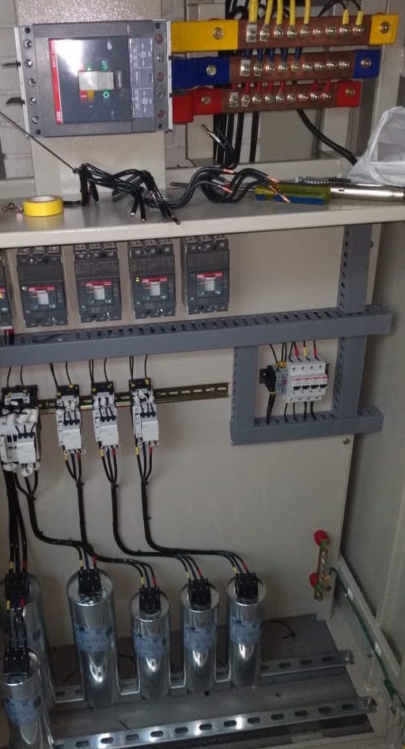

BANCOS DE CONDENSADORES AUTOMATICOS
LOS BANCOS DE CONDENSADORES SON EQUIPOS QUE CONTROLAN EN CONSUMO DE ENERGIA REACTIVA
La potencia reactiva suministrada por el banco de condensadores se puede ajustar de acuerdo con las variaciones en el factor de potencia y la carga de los equipos. Estos bancos de condensadores se componen de una combinación de pasos del condensador (paso : condensador + contactor) conectados en paralelo . El encendido y apagado de todo o parte del banco de condensadores está controlado por un controlador de factor de potencia integrado . El equipo se aplica en puntos en una instalación donde las variaciones de potencia activa o potencia reactiva son relativamente grandes , por ejemplo:z En las barras de distribución de una placa de distribución principal. En los terminales de un cable de alimentación muy cargado. Cuando la clasificación kvar de los condensadores es menor o igual al 15% de la clasificación del transformador de suministro, es apropiado un valor fijo de compensación .
Ventajas:
- Alto factor de potencia bajo cargas fluctuantes.
- Elimina la penalización del factor de potencia.
- Menor consumo de energía al reducir las pérdidas.
- Variación automática, sin intervención manual.

Desventajas:
- No sirve para compensación de los cuadros principales de distribución del VI.
- Por encima del nivel del 15%, es aconsejable instalarlo.
- Tamaño del banco de capacitores automático Qc > 15% kVA transformador